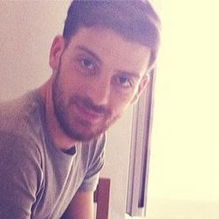

<div class="about">
  <p>Hi, I'm Francesco! A software engineer from Italy, with a penchant for product design and productivity hacks.</p>
  <p>Currently I'm working at <a href="https://latana.com/" target="_blank">Latana</a>, a market research company in Berlin. I really love working with Ruby on the backend, but sometimes also I like to get my hands on the frontend side.</p>
  <p>I'm a fan of Agile methodologies and the Rework manifesto.<br>I believe in ethics, simplicity, and purpose.</p>
  <p>Movie snob, typography lover, and UX enthusiast.<br>I like building things that help people in their everyday life.</p>
</div>
